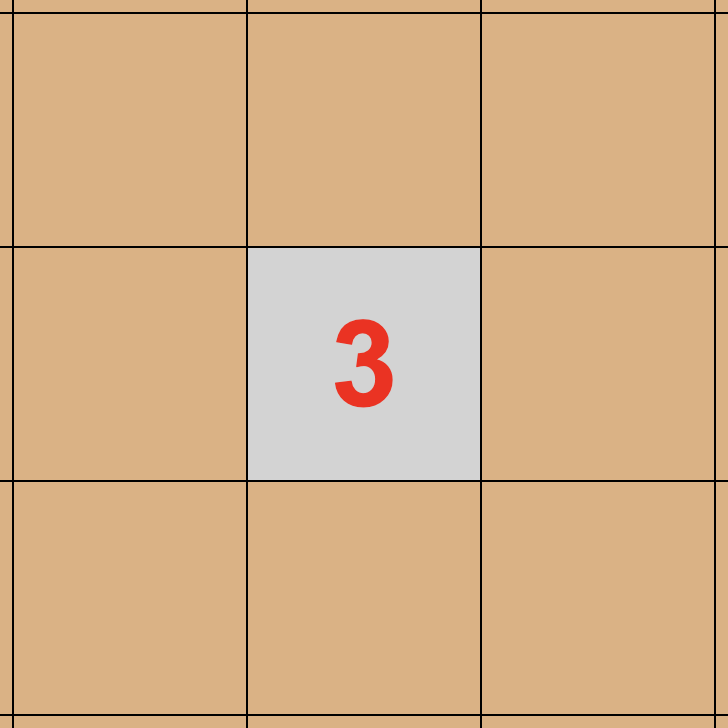

This game is a combination of minesweeper and cricket. There are 11 fielders placed randomly in the grid, and your aim is to maximise the runs scored in 1 minute without getting all-out.
Go to settings and select your Grid Size and number of Wickets.
Now move on to the game and have fun.

Right click to reveal a cell. The cell can be either a fielder or a number.
You can also left click a cell to place a flag on it if you suspect it is a fielder. This doesn't confirm your suspicions but prevents loss by misclicks.
If it's a fielder, you lose a wicket.
If it's a number instead, it denotes the total number of fielders present in the 8 cells which are adjecent to it. Here, the number is 3. Hence there are exactly 3 fielders in the surrounding 8 cells.
The faster you play, the greater is the rate of increase of your score.
You must reveal a cell within 1 second of last reveal to maintain your streak.
The game ends if either your time runs out, you reveal all the non-fielder cells or you get all-out.
Your final score is the sum of runs scored in each wicket.